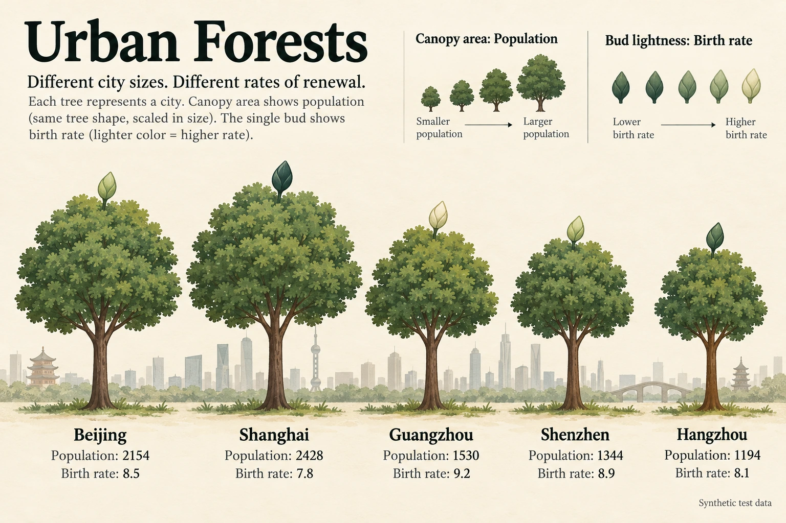
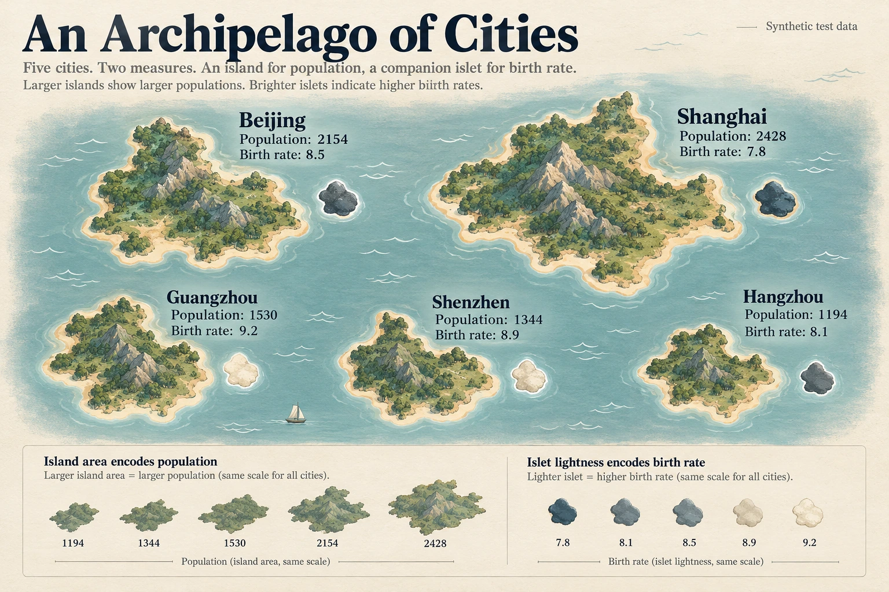
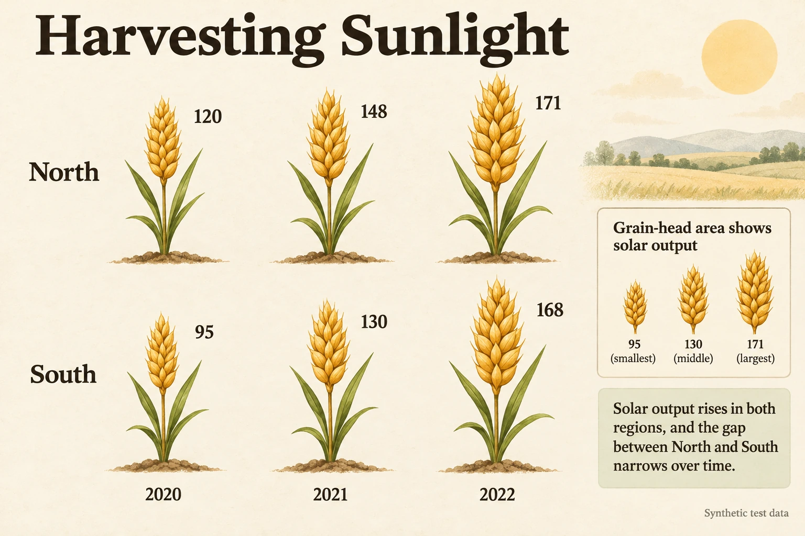
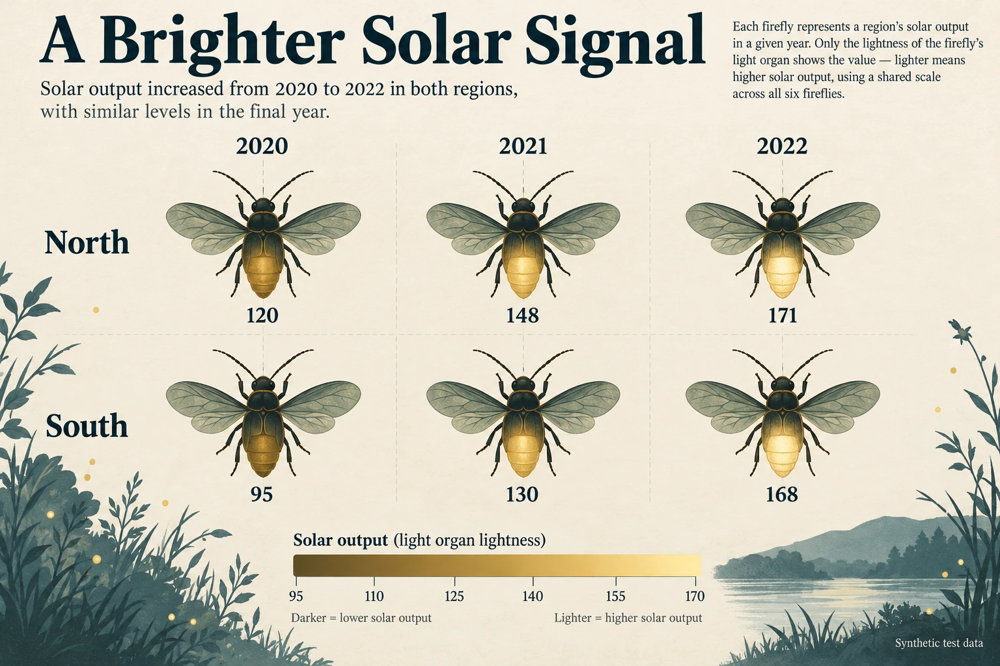

本轮判断
仓库让构思过程可见，
但多步骤没有自动变成更好的选择。
直接提示已经能给出多种可用隐喻。仓库提供了明确的中间过程、视觉部件和绑定规范，也引入了新的表达方向；本轮尚不能据此判定它稳定优于直接提示。
更值得继续研究的是：怎样让六种策略的成果真正进入候选池，怎样让 Blind 有效工作，以及怎样在图像中守住数据编码。
让同一份数据，经过两条构思路径。直接提示组提出六套完整方案；仓库组生成更多候选后保留六套。原轮次共画出24张图，下面新增改进筛选的候选与理由。
两组均使用当前 Codex 文本能力与内置生图。
这是可复核的定性探索，未进行等预算或独立评审实验。




下表是改进版的文字候选。原轮次24张图片仍按原配置展示，不能作为改进版的生图结果。
原限制来自哪里？仓库原本有totalLimit，默认30；原实验设为6是本次实验配置。原代码按顺序截取，导致Guided名额都落在首个策略。
改进规则：完整收集六种策略与Blind分支结果，再按数据契合度、可绘制性和双字段绑定可行性筛选。每种Guided策略保留1个，共6个；另保留4个不重复的Blind分支候选，每例共10个，维持40%的比例。相似视觉家族会扣减选择优先级，主题补词不再替换已选结果。
这些优先级来自当前Codex的设计判断，用于选择候选，不是独立评审或创造力效果评分。这是仓库外实现的实验改进分支；回放重用26段已记录响应，没有新增文本API调用，也没有执行改进版Module3或生图。
上游融合提示词允许field为抽象多词主题；控制器直接把整个field交给Blind。下游只做小写和去空格，然后要求完整字符串命中词表。实际已加载50,000个词，但两个完整主题都未命中，向量探索尚未开始便返回空结果，触发模型兜底。
因此问题是上游主题短语与下游单词索引的接口不一致，并非案例少或词向量文件没加载。修复应保留完整主题，同时增加独立的起始词及词表校验，或为多词主题构建组合向量；转换方法和来源都要记录。此次回放尚未修复或重跑Blind，下面的Blind候选仍标为模型兜底。
点击图片查看大图、两条绑定关系和完整提示词。也可以先隐藏方法标签，再进行自己的比较。
仓库组真实执行原始 Python 算法与解析流程。只有模型响应通过外部桥接交给当前 Codex；桥接会完整保存请求与回答。
表头语义 → 数据主题 → 全表事实 → 语义融合。每例一次，通常四段响应；两个组收到同一份数据与表达目标。
直接组一次回答给出六套完整方案。仓库组执行 ★ 六种 Guided 策略、★ Blind 路径、改写、分类、主题补齐与裁剪。
仓库每个候选分别生成部件、选择 ★ 字段—部件—通道绑定、生成提示词。两组全部附原始表格，每个方案生图一次。
★ 标记仓库重点设计机制，不代表本轮新增或已验证的学术创新。响应段数不等于 token、费用或独立采样次数；两组没有匹配计算预算。
以下区分可直接核对的代码行为、图像观察，以及设计判断。没有用模型自评编造用户研究分数或显著性。
直接提示已经能给出多种可用隐喻。仓库提供了明确的中间过程、视觉部件和绑定规范，也引入了新的表达方向；本轮尚不能据此判定它稳定优于直接提示。
更值得继续研究的是：怎样让六种策略的成果真正进入候选池，怎样让 Blind 有效工作，以及怎样在图像中守住数据编码。
两例的 Agent4 都按原顺序保留前四个 Guided 候选，均来自“替代”策略。后五种策略虽已生成结果，却未进入这一配额。执行覆盖不等于输出多样性。
两个多词主题都无法在单词词向量表中直接命中。程序按原实现转入 LLM 兜底，所以这轮不能验证随机词向量探索的收益。
城市补了 heart、journey；能源补了 heart、firefly、momentum。这扩展了表面类别，也增加了抽象词具体化的负担，不能全部计作原生 Guided / Blind 的贡献。
图像可能保留正确数字，却改变芽、卵或其他非编码部件的尺寸。所有结果一次生成后保留；逐图备注可查看发现的问题，未进行严格像素面积或明度测量。
两个案例分别完整执行一轮。以下次数为每个案例；六种策略依次为替代、合并、适应、修改、重构、颠倒。星号标记仓库设计机制。
| 步骤 | 具体操作 | 实际响应／图片次数 |
|---|---|---|
| 1 · 共享理解 | 表头解释、主题提取、数据事实、融合绑定；使用第一个主题，保留完整主题文本。将同一原表、主题、事实与字段交给两组。 | 每例4段文本 |
| 2A · 直接组 | 一次提示要求六种隐喻；每种同时给出理由、字段到部件与通道的映射、完整生图提示词。全部六种保留。 | 每例1段文本 |
| 2B · ★ Guided | 六种策略分别先选设计维度，再生成变体。Agent4按源码顺序截取四个Guided名额；本轮均来自首个“替代”策略。 | 每例12段文本 |
| 3B · ★ Blind | 按原代码尝试词向量探索；完整多词主题未命中，触发原生LLM兜底。没有将主题人为替换成单词。 | 每例1段兜底文本 |
| 4B · 整理与均衡 | 批量Agent5改写，批量主题分类，再补齐缺失主题，按控制器输出裁为六个。保留来源追踪：城市2 Guided＋2兜底＋2补词；能源2 Guided＋1兜底＋3补词。 | 每例2段批量文本；另城市2段／能源3段补词 |
| 5B · ★ 视觉绑定 | 对最终六个候选逐一执行部件设计→字段与视觉通道绑定→生成提示词，全部延展，没有挑第一个，也没有质量重排。 | 每例6×3＝18段文本 |
| 6 · 统一生图交接 | 两组原提示词均追加同一交接规则与原始数据表；使用内置imagegen，各方案只生成一次，保留首张结果，失败不择优重抽。 | 每例2组×6＝12张；两例24张 |
| 7 · 逐图记录 | 同一Codex会话检查标签、绑定约束、图例与明显视觉问题。全部图像、映射、提示词和备注公开；不生成创意评分或显著性结果。 | 每例12条读图备注 |
数据表追加与统一交接是本实验为内置生图设置的外部适配；直接组一次完成整套设计，仓库组分步完成。两者文本预算不相等，也不是作者原生图片接口的逐项复现。
Agent 是仓库中的任务角色代码与提示词，可以共用同一个大模型。这里全部文本由同一当前 Codex 对话回答，原代码里的模型名称仅作为请求元数据记录，不能当成实际模型身份。上下文未隔离，采样温度无法通过对话桥精确控制。
基于 Git 提交 aafc7cda61b9fcb47d1536dbfad664c10352431e 另建参考副本。除两项文件级修复外，所有复制的 Python 文件都与原始提交逐文件哈希一致。
这里只有两个小型合成数据案例，每例每组一轮。没有独立设计师评审、读者理解测验、统计检验、等 token 预算对照或有效的向量 Blind 消融。图像均未经择优重抽；读图备注来自生成它们的同一 Codex 会话，应作为可检查的观察，而不是独立评分。
因此，这轮支持流程诊断与方案比较，不支持“仓库显著提升创造力”“读者理解更好”或“科研效果已经证明”的结论。
下载执行结果查看 Agent4 初始候选、Agent5 输出、主题补词和最终控制器结果；下载提示词轨迹可逐条核对81段原提示词响应。图片提示词包含原方案原文和两组一致的原始数据交接约束。